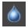

パスからレイヤーへ
一度パスを作成すると、ツールボックス下部のツールオプションから、活性レイヤーに対して以下の操作を実行できます。
- パスを選択範囲に
- パスを塗りつぶす
- パスの境界線を描画
以下では順次、上記の操作について解説していきます。
Warning
いずれの操作についても、操作前に操作対象にしたいレイヤーをレイヤーダイアログで選択し、活性レイヤーにしておく必要があります。
また既存の選択範囲が存在する場合、特別な事情がない限り、予め選択を解除しておく必要があります。
選択を解除するには、右クリックで開くコンテキストメニューから 選択 > 選択を解除 を実行します。
パスを選択範囲に
パスはすでに作成してあり、ツールボックスでアイコン パス が選択されているものとします。
パスを使って選択範囲を作成したいレイヤーを、ドック内のレイヤーダイアログで選択します。
ツールボックス下部のツールオプションから、ボタン パスを選択範囲に を押下します。
活性レイヤーに選択範囲が作成されます。
Warning
上記手順でレイヤー 背景 が選択されていた場合、一見、レイヤー 前景 に選択範囲が作成されたように見えるかもしれません。しかし実際には背景に選択範囲が作成されているため、この後、選択範囲を使って何か作業をしようとしても、思うように操作できない可能性があります。
パスを塗りつぶす
パスはすでに作成してあり、ツールボックスでアイコン パス が選択されているものとします。
Note
ここでは 2 つのコンポーネントからなるパスを作成しています。 1 つは閉じた図形で、もう 1 つは開いた図形です。
パスを使って塗りつぶしたいレイヤーを、ドック内のレイヤーダイアログで選択します。
ツールボックス下部のツールオプションから、ボタン パスを塗りつぶす を押下します。
活性レイヤー上で、パスで区切られた領域が塗りつぶされます。
Tip
開いたコンポーネントは、開始端となるアンカーと終了端となるアンカーが見えない直線で結合されたかのような状態で、閉じた領域が塗りつぶされます。
パスの境界線を描画
パスの分節に沿って線を描くことができます。描画には、線スタイルを設定して描く方法と描画ツールを用いて描く方法があります。
Warning
この場合も、操作前に操作対象にしたいレイヤーをレイヤーダイアログで選択し、活性レイヤーにしておく必要があります。
ツールボックス下部のツールオプションから、ボタン パスの境界線を描画 を押下すると、ウィンドウ パスの境界線を描画 が開かれます。ラジオボタンで 線スタイルを設定して描画 するか 描画ツールを使用 するかを選択します。またそれぞれの項目には、いくつかのオプションが存在します。
線スタイルを設定して描く
線スタイルを設定して描画する場合、予めツールボックスで描画色を指定しておきます。
他に、線の幅を指定したり、破線や点描などの線の種類を指定することもできます。
Tip
チェックボックス アンチエイリアス にチェックを入れることで、描線のギザギザを滑らかにすることができます。
描画ツールを用いて描く
描画ツールは、全 14 種類のうち 12 種類利用できます。 利用できる描画ツールの一覧は下記の通りです。
| アイコン | 名称 | 機能 |
|---|---|---|
| ブラシで描画 | スムーズなタッチで描画する | |
| 鉛筆で描画 | 固いタッチで描画する | |
| エアブラシで描画 | 圧力調整可能なエアブラシとして描画する | |
| インクで描画 | カリグラフィスタイルで描画する | |
| MyPaint ブラシで描画 | MyPaint ブラシで描画する | |
| 消しゴム | 描画を消して透過状態にする | |
 |
スタンプで描画 | スタンプソースとして指定した画像やパターンでスタンプする |
 |
遠近スタンプで描画 | 遠近感をつけてスタンプする |
 |
修復ブラシ | 画像を修復する |
 |
にじみ | にじませる |
|  | ぼかし/シャープ | ぼかしやコントラストをつける |
| 暗室 | 明るさを変化させる |
Warning
描画ツールのうち 塗りつぶし と グラデーション は利用できません。
描画ツールを使って描画するには、利用したい描画ツールのオプションを、予めツールボックスから当該の描画ツールを選択した上で設定しておく必要があります。
描画は、活性レイヤー上に、指定した描画ツールでパスをなぞるように実行されます。
下図は インクで描画 した例です。
用語一覧
| 用語 | 英語 | 意味 |
|---|---|---|
| パス | paths tool | パスの編集や作成を行う |
| レイヤー | layer | キャンバスの上に重ねられた、描画のための層 |
| 選択範囲 | selection | 主に選択ツールで指定された範囲。白と黒の動く破線で囲まれ、切り取ったり塗りつぶしたりできるようになる |
| 描画ツール | paint tools | マウスポインタを使って描画したり、画像を加工したりするためのツール |
| アンチエイリアス | antialiasing | 描画においてギザギザを目立たなくさせる処理 |